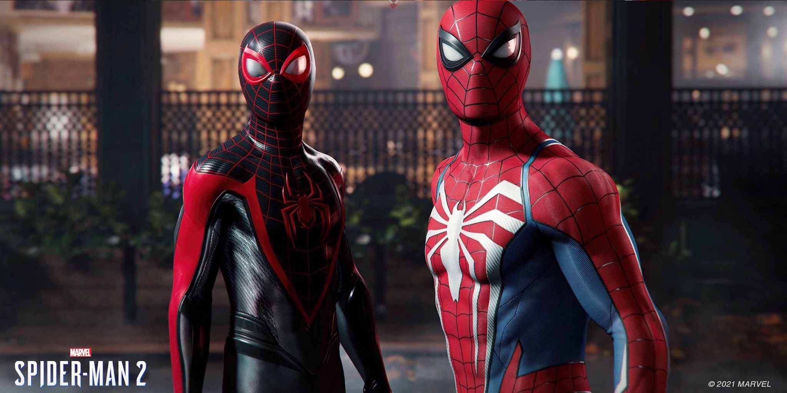

Estúdio confirma “Marvel’s Spider-Man 2” para 2023, segundo roteirista.
Informações foram apagadas do site da roteirista Jamie Mayer, mas fãs fizeram prints antes disso ocorrer

Jamie Mayer, roteirista responsável por dois dos grandes projetos da Insomniac Games, deixou escapar uma possível janela de lançamento para Marvel’s Spider-Man 2. Segundo a escritora, o exclusivo de PS5 fará sua estreia na primavera de 2023 — entre 22 de setembro e 21 de dezembro.
Depois de tanta repercussão nas redes sociais, Mayer editou a informação no seu site e removeu o período indicado. No entanto, os internautas conseguiram fazer capturas de tela do portal antes de ela efetuar as atualizações. Confira as imagens abaixo:
"Atualmente na equipe de roteiristas do aguardado Marvel’s Spider-Man 2 (lançamento na primavera de 2023) e Marvel’s Wolverine (data de estreia não definida) para a Insomniac Games e a Sony Interactive."
Ainda não há como confirmar se Mayer removeu a publicação a pedido do próprio estúdio, ou se a janela indicada ainda pode passar por alterações e ela tomou essa decisão após toda a repercussão causada na internet.
Agora, a descrição do trabalho da roteirista é praticamente a mesma dada pela Insomniac:
"Trabalhei no aguardado Marvel’s Spider-Man 2 de PS5 que será lançado em 2023, e também no próximo jogo do Wolverine."
LEIA MAIS
1 - God of War Ragnarok Review
2 – Elden Ring ganha como Jogo do Ano no The Game Awards;
Marvel’s Spider-Man 2 é listado na PS Store do Reino Unido.
Enquanto ainda não sabemos quando poderemos jogar Marvel’s Spider-Man 2, a Insomniac parece estar dando pistas sobre uma possível revelação. O jogo chegou a ser listado na PS Store do Reino Unido recentemente. Veja aqui!